-
helpIntroduction and General Usage
Welcome
Bitty.synth is a simple music synthesizer designed with multi-touch in mind. Bitty.synth uses “frames” – snapshots of a sound – arranged with a seek to notate music. Individual frames with a common instrument and pace make a canvas. Mix and match up to five canvas sounds and three external sounds in a timeline view to create music, or compose on the fly using live view.
The Side Menu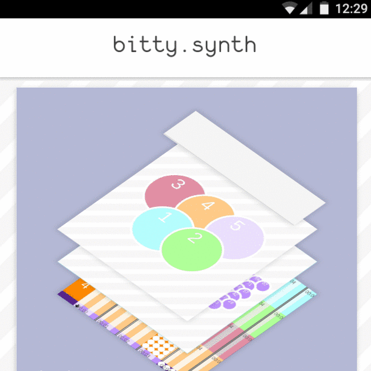 To access the side menu, either press the "bitty.synth" top logo, or swipe from the left edge of the screen. The side menu allows access to all views used in bitty.synth.
Back Button Navigation
Pressing the Back button to navigate between views on Android devices is supported, but not recommended. Access to views is best served with the side menu. -
helpThe Live View
The Live View is used to create music in a live setting. It is designed to mimic an instrumental keyboard.
The Live Keyboards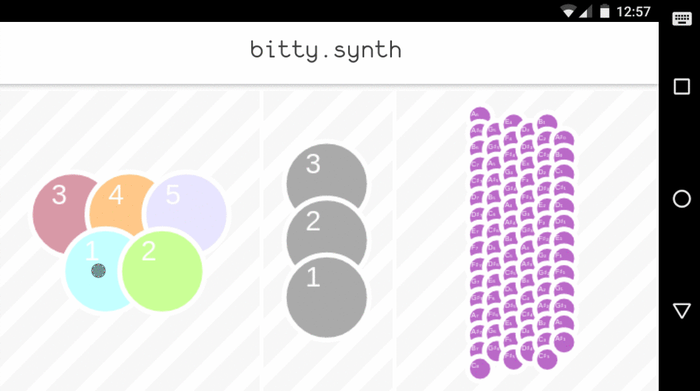 Each dot on the Live View is used as a key on an instrument. Pressing a key will produce an associated sound. A key can only be pressed when that key is not already playing a sound.
Canvas Keyboard
Colored dots on the left of the Live View represent canvas keys. Pressing a key will play the corresponding canvas. A bouncing dot will indicate whether a canvas is currently playing.
External Sounds Keyboard
Grey dots on the center of the Live View represent external sound keys. Pressing a key will play the corresponding external sound. A boucing dot will indicate whether an external sound is currently playing. If an external sound is not loaded, a message "No ext" will appear briefly.
Miniature Keyboard
Purple dots on the right of the Live View represent a miniature keyboard. Pressing a key will play the corresponding note. Hovering over keys with a mouse or a touch point will also play the corresponding note. The Miniature keyboard can be configured and disabled in Settings; it may impact performance on low powered devices. -
helpThe Timeline View
The Timeline View is used to compose music that can be played back. Sounds can be arranged, repeated, and synchronized on individual timelines that make up a complete sound.
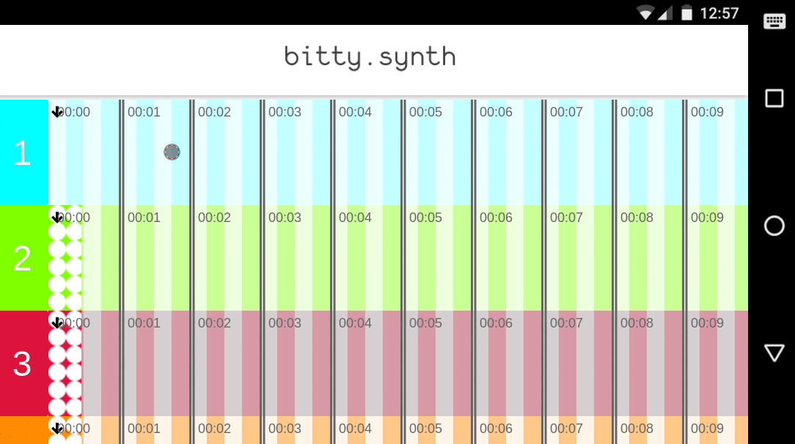 Canvas Timelines
Colored and numbered timelines represent canvas timelines. Each canvas timeline can be scrolled individually. To add a canvas sound to a certain time, simply press that point in time on the timeline. To remove a canvas sound from a certain time, simply press the canvas sound.
External Sound Timelines
Grey timelines represent external sound timelines. Each external sound timeline can be scrolled individually. To add an external sound to a certain time, simply press that point in time on the timeline. To remove an external sound from a certain time, simply press the external sound.
Timeline Playback
Pressing the red Play button at the bottom of the Timeline View toggles playback of the composed sound. Black arrows on each individual timeline indicate playback progress. -
helpThe Canvas
The canvas view shows a frame in a sound sequence. Multiple frames make up a canvas sound. Colored dot keys represents keys on an instrument. Their notes are labeled.
Solid filled dots represent notes placed on a frame; shadowed dots represet note hints.
Editing Canvas Frames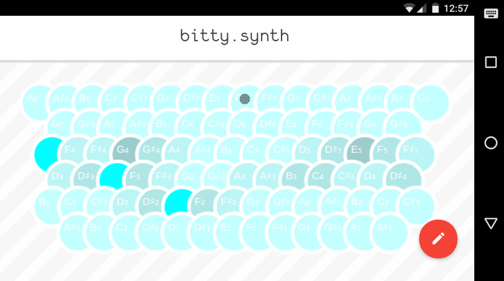 To add or remove a note to a frame, press that note.
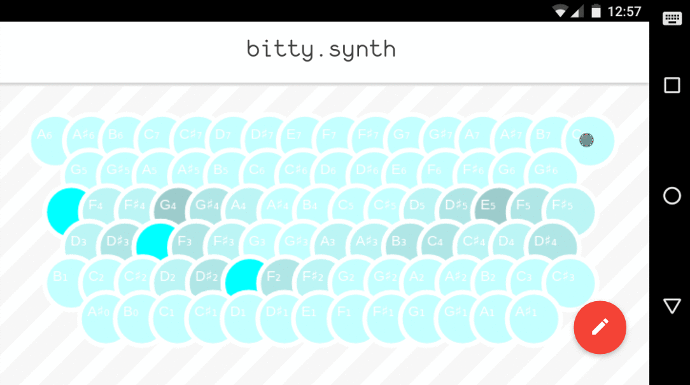 To preview a note, hover a cursor or touch point over that note.
Navigating Menu ItemsTo open a menu with additional actions, press the red floating action button.
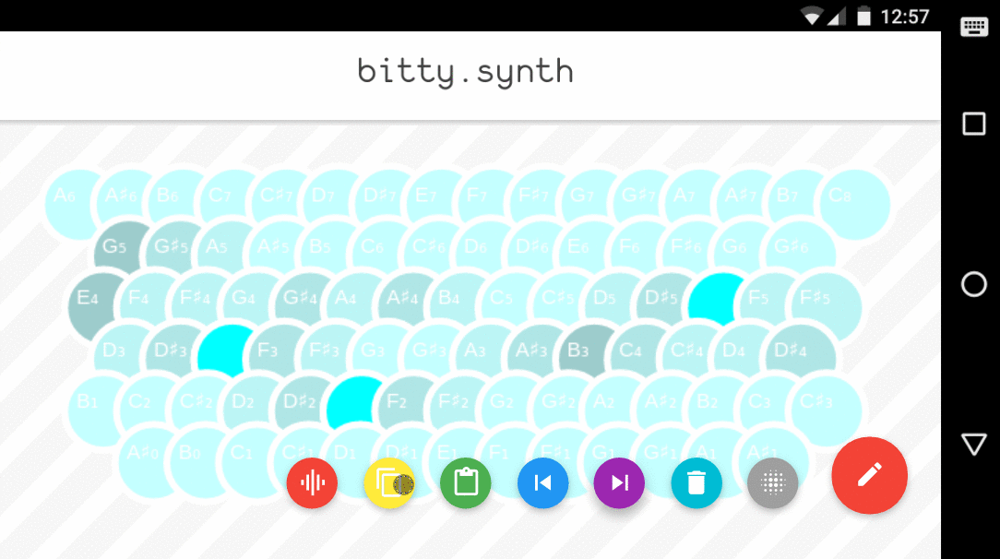 Copying, pasting, and deleting frame contents can be accessed in the menu.
Moving Between Frames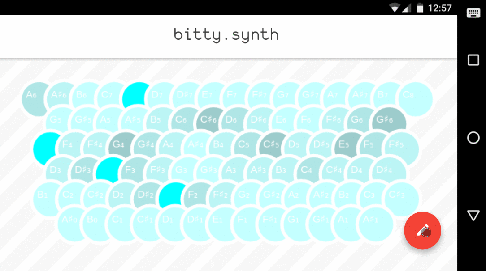 Pressing the previous frame and next frame buttons in the menu can be used to navigate between frames.
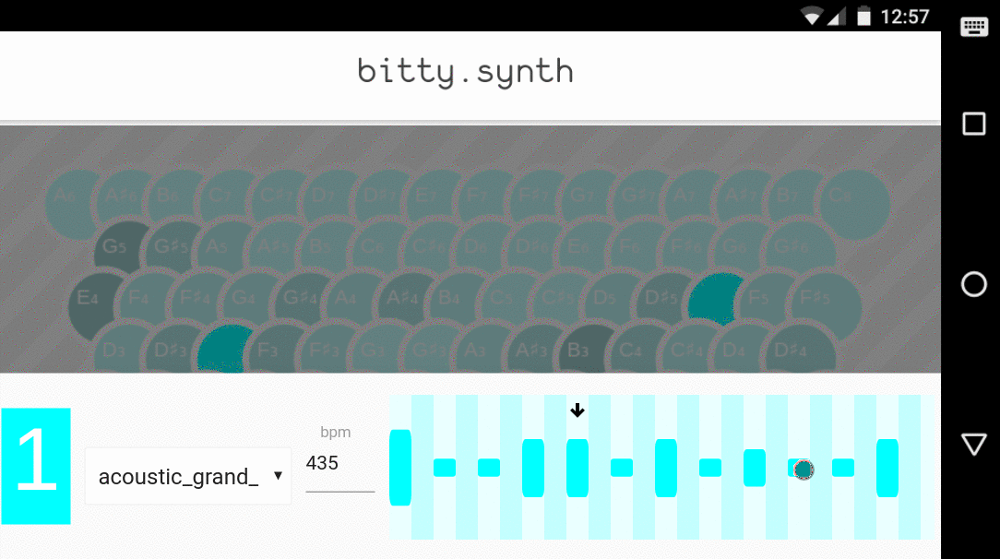 The canvas seek, accessed from the menu, can also be used to move between frames.
Canvas Properties and Effects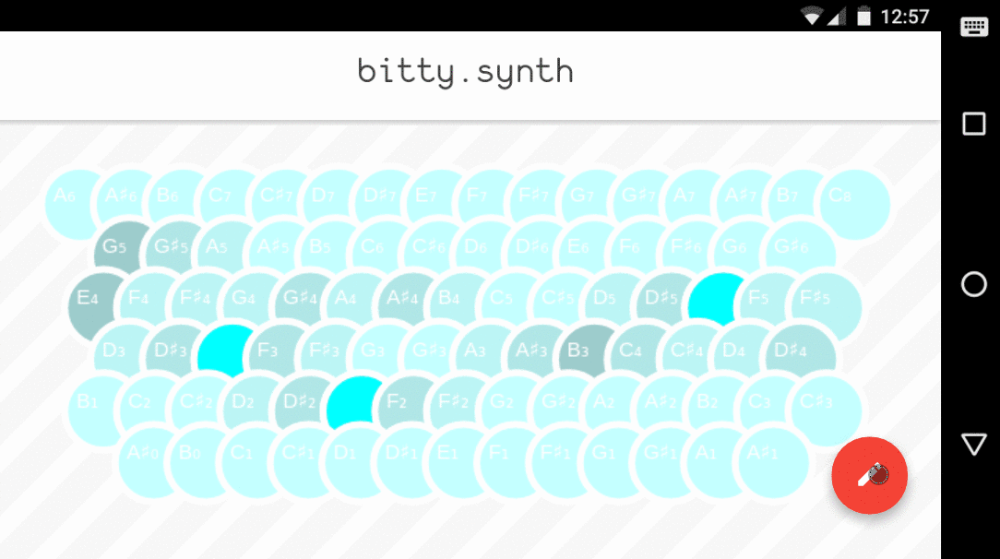 The canvas seek also contains canvas properties, such as the selected instrument, and the bpm, the pace at which frames are played.
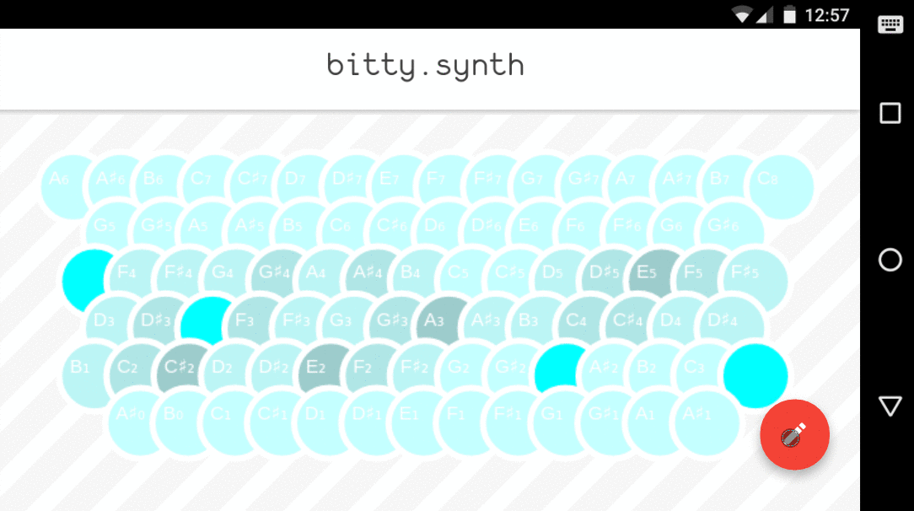 Canvas effects, such as volume effects and pitch effects, can be edited from the menu. Volume and pitch effects should be written in the form of a function of f(x). Volume effects should produce a range of 0 < vF(x) < 127, and pitch effects can take both positive and negative values.
-
helpExternal Sounds
External sounds are files from elsewhere, such as files from a local file system, or from the internet. Input a file's full URI, including protocol, such as "https://" or "file://". Files from a local file system are not recommended as their locations may change from user to user.
-
helpThe Start Page
The Start Page is displayed on every startup. It features shortcuts to views and convenient features.
Common Actions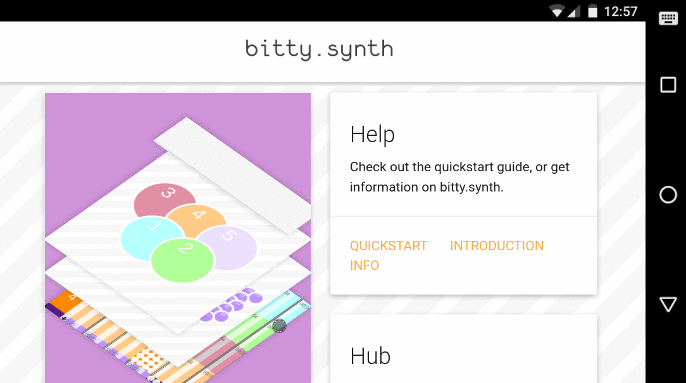 Clear and recreate clears any saved sound and jump to the first canvas.
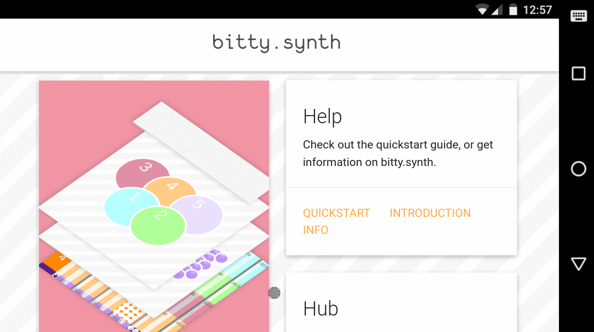 Load a sample sound. Loading a sample sound will clear all saved sounds.
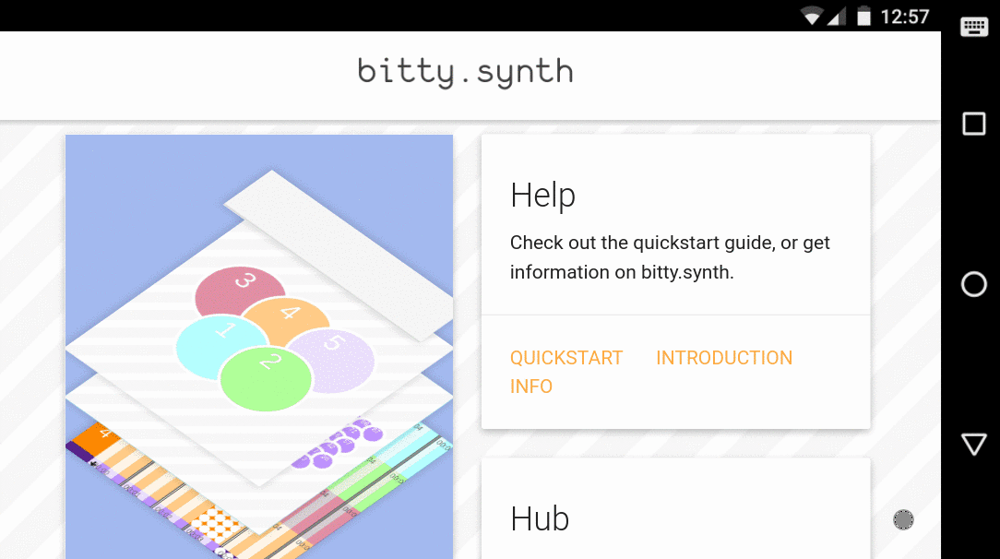 Import a sound from a bitty.synth URI definition. Importing a sound will clear all saved sounds.
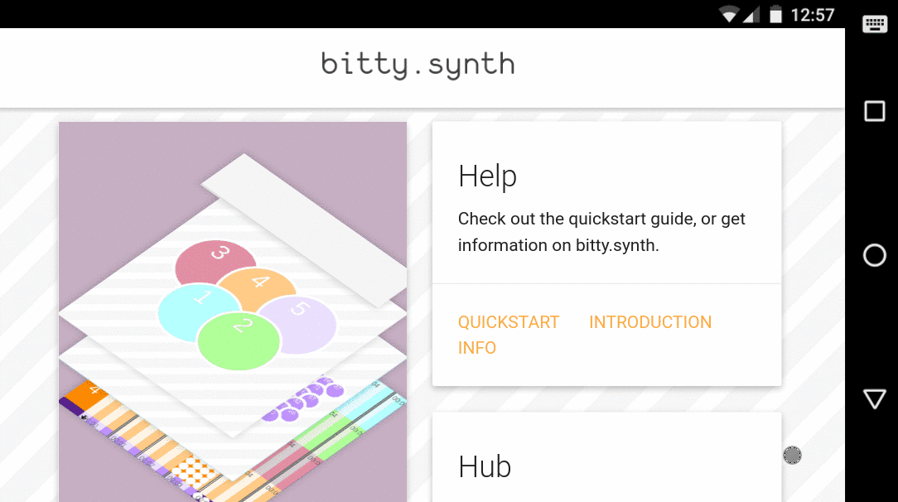 Share a saved sound in terms of a bitty.synth URI definition.
Other Information
Bitty.synth uses internet connectivity to load Google's Icon Font. -
helpSettings Usage
Configure bitty.synth settings with the Settings view.
Settings Help- Name information is used to store Author Information. It is not transmitted across any network.
- Enabling multithreaded playback allows for smoother performance on low powered devices such as Android devices. It cannot be used on desktop/PC versions of bitty.synth due to limitations with the Electron framework.
- Graphics quality can be adjusted to increase performance.
- Shadows for previous points are grey dots presented in the Canvas View.
- Pattern based hinting sequence length adjusts how far back bitty.synth looks from the selected frame when suggesting hints. Turning this feature off may improve performance on low powered devices.
- Hint note count configures the number of hints bitty.synth generates per note in each frame.
- Hint library configures the source of hints generated by bitty.synth.
- Hint lookup mode configures how hints are generated. In discrete mode, the most recurring notes are hinted; in probabilistic mode, a series of notes are hinted by weighted probability.
-
helpPredictive Hints
The predictive library can be accessed via the side menu.
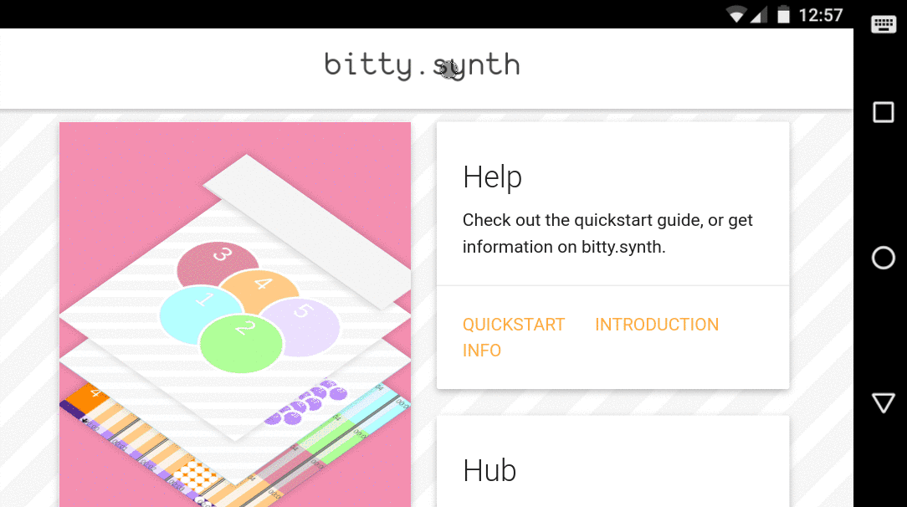 Technical descriptions of how the predictive library functions is located in the library browser.